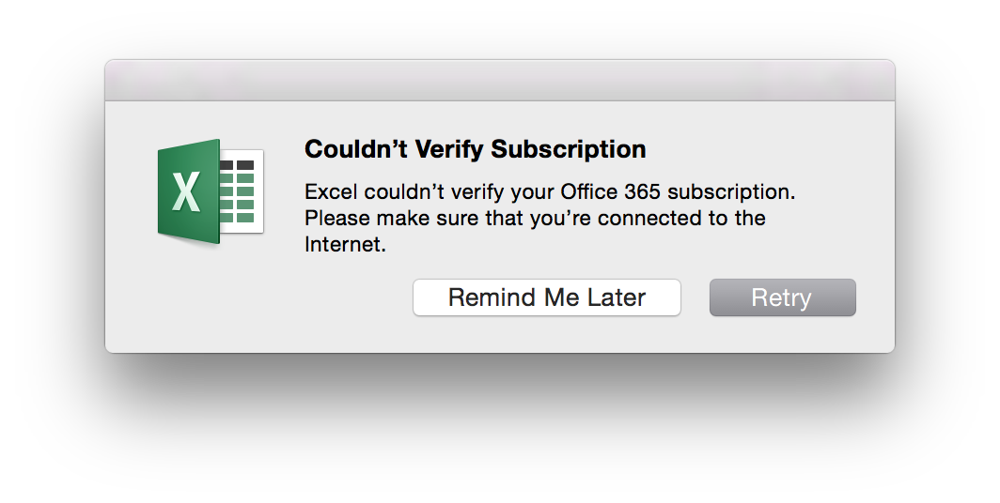

Thick Apps Still Lose

Thick apps won mobile. Fine.
On laptop (and desktop) it's not so clear. What is better, thick or thin? I tend to live mostly in thin land, although I use some thick apps regularly, like Twitter's Mac client and Apple Photos.
Every so often I give a big native app a try: Excel instead of Google Sheets, Mail.app instead of Gmail, Reminders instead of the barebones Tasks built into Gmail. (I can't bring myself to try Word). But it's disappointing to see how those fancy apps keep shooting themselves in the foot!
Take for example this Excel error message. Excel is whining that it can't verify my subscription the first time I ran Excel untethered (version 15.11.2, for what its worth). Sure you can click through the warning, but would a newbie know to do that? At best off-putting, at worst downright disorienting. Why warn me of this at all? And why in a modal that stops me dead in my tracks?
It seems thick apps should win. They rock the unplugged use case. An even better situation is flaky networks -- tethered, conference WiFi, travelling. UI's deal notoriously poorly with intermittent or partial outages. A thick client, relying on that connection only for hitting API's, can hide the network.
Another place they should shine is the UI itself. They should be fast, beautiful, and featureful. Too often they're not. For example I find Mail.app to be clunky, difficult to customize, and its keyboard shortcuts few and poorly done. Gmail is pretty good!
Finally there's the upgrade problem. Thick apps need conscious effort from their users before their work sees user time and they get feedback. And that's what drives innovation. Long cycles means slower (less) invention. One example I love is Gmail's "undo send" feature. Boy, you sure do miss that when you need it and it's not there! That should be on every thick client by now, but I don't think it is. I do know that Gmail has it and Mail.app still doesn't.
Maybe the Internet can help. Look at Chrome with its awesome auto updates. What makes this work is solid engineering and exceptional quality control. I've never seen behind the Google curtain, but I bet there's no magic, just a lot of good engineering that leads to good software. Like: good design and code reviews, tons of test coverage across many scenarios, diverse and well-instrumented canaries, and thorough performance and resource use testing. If Google didn't all of that so well, then we wouldn't accept frequent pushes. Without the frequent upgrade cycle, Chromes feature cycle would languish.
Electron is another bright spot. This is the framework that gives Slack and GitHub's thick clients their fit and finish. It makes these feel like true native apps, even though they are mostly web controls with JavaScript the covers. Right-clicking still doesn't do what I want, and text controls are finicky, but it's close. But what those rough edges buy you, and the software producer, are frequent, reliable, and clean upgrades.
My natural preference would be for thick apps. If they were done well, I'd use them.
Comments
Comments powered by Disqus